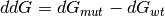

This module provides YYYYY.
Empty.
This class performs a md simulation.
Set up the md, run equilibration and run the md.
Docstring missing.
Docstring missing.
Docstring missing.
Docstring missing.
Docstring missing.
Docstring missing.
Docstring missing.
Docstring missing.
Docstring missing.
If a trajectory is calculated an already existing file of the same name is deleted.
Run the program.
Docstring missing.
This method converts the first structure and saves it as pdb_path, then it reads the data and converts the second and overrides pdb_path. After the calculation the rmsd is returned and the pdb_path will be removed. The second structure will be rotated
Docstring missing.
| Returns: | A list with the energy as the first and the most populated fold as the second item. |
|---|
| Returns: | A list with the minimum energy in the trajectory as the first and the corresponding fold as the second item. |
|---|
generate latFold run command
Docstring missing.
Docstring missing.
This functions scores the given pdbs and returns their score as a list. The returned list should contain the energies in the same order as the given pdb_path_list
This function calls rosetta to minimize the given pdb. The input and the output are superimposed afterwards.
This function calls rosetta to mutate a given pdb. It is recommended to refine the structure before mutating it. The wild type should be copied to the ‘new_dir’ previously. The calculated ddG will be returned and is calculated like this:

and is < 0 for stabilizing mutations and > 0 for destabilizing ones.
If no ‘new_path_prefix’ is given, it will delete the mutant pdbs, otherwise they will be named like this:
‘{0}_{1}.pdb’.format(new_path_prefix, i) with i in range(iterations).
This class implements a method to run a FoldX simulation.
refers to a structure that should be mutated and analyzed without ‘.pdb’!
the sequence of the pdb (pdb_name)
a mutated version of sequence_parent
indicates, if the pdb should be repaired at first
the name of the scored structure
the temperature of the experiment in K
the pH of the experiment
the number of runs with different starting conditions (in the end the mean will be returned)
the residues which should be kept fixed. Format: (aminoacid)(chain)(number), e.g. LC7, RA17
Docstring missing.
Docstring missing.
Docstring missing.
Docstring missing.
Docstring missing.
Docstring missing.
Docstring missing.